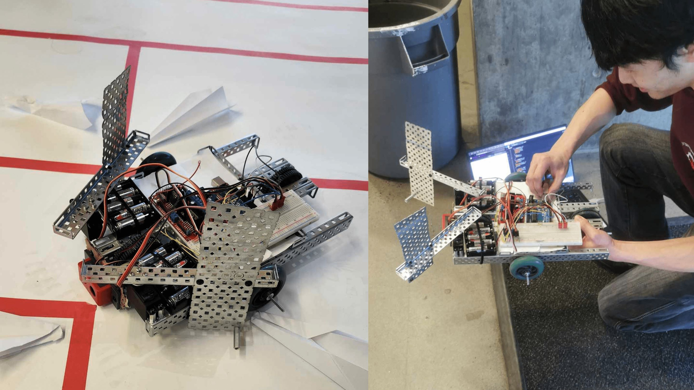
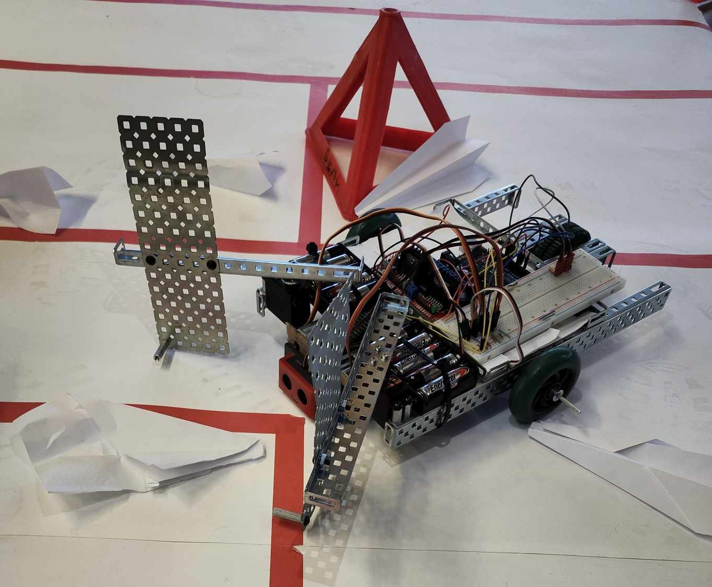
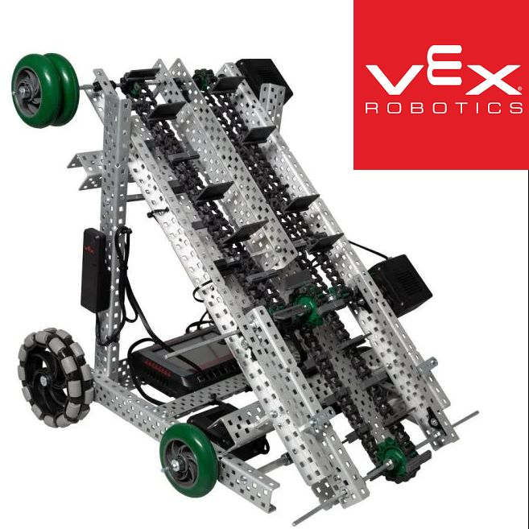
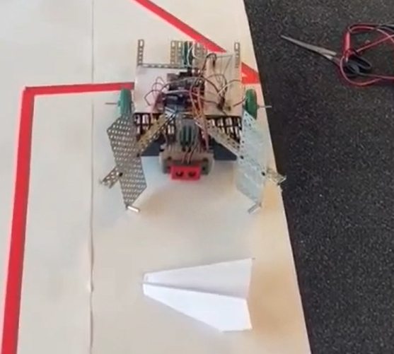
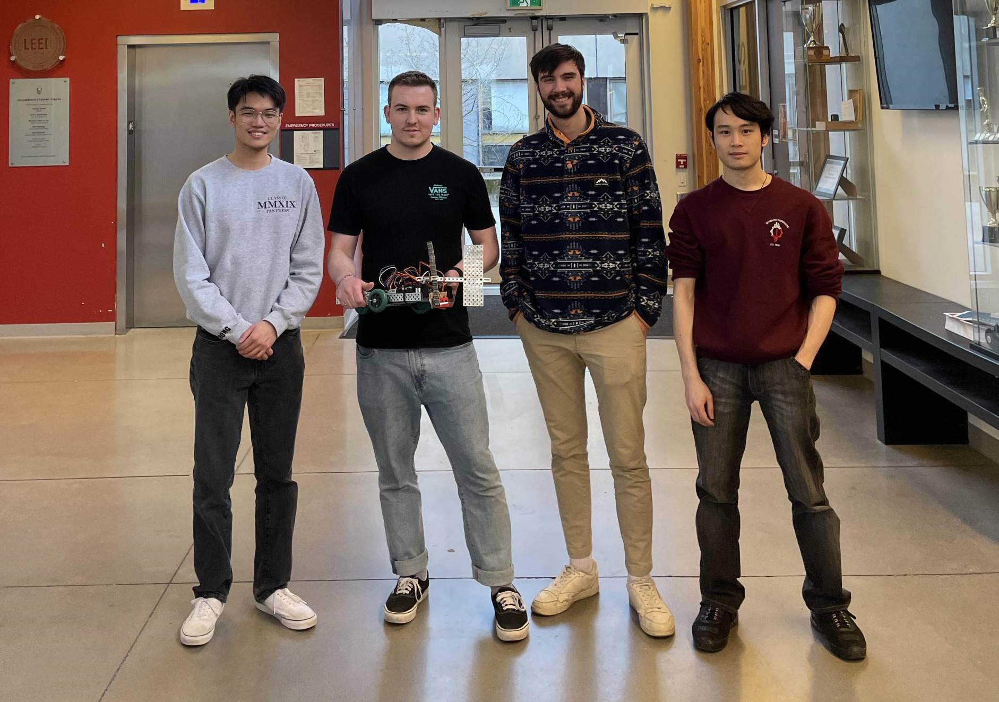

In the middle of 2024, the UBC Design League held a small design competition based around the fabrication and implementation of a robotic solution to a given problem. For this competition, each team (of 4) was tasked with devising a scaled down method for an airport to autonomously taxi ‘airplanes’ (paper airplanes) to their hangars. The competition occurred over the span of 8 hours, with the final deliverables being a live demonstration and presentation to a panel of judges.
- I was in charge of coding the pathing and retrieval mechanisms, and getting the robot moving.
- I also worked on the integration of electronic controls (sensors, servos, motor drivers).
Our Final Presentation
Ideation:
Each team was supplied with access to VEX robotics parts including framing, sensors and motors. Additionally, teams were allowed access to fasteners, with external materials and controllers forbidden. Based on the components available, our team opted to design a servo actuated clamp mechanism which would enclose the aircraft, and restrain it as it was being guided to a hangar.

Coding the Controls:
The main control loop relied upon an ultrasonic distance sensor to detect the presence of an object within range of the clamp. A rudimentary pathing algorithm was used to ‘sweep’ the runway, until the airplane was found by the robot, at which point the robot would direct the airplane based on the distance traveled down the runway, and move the airplane into the boundary outlining the “hangar”.

Due to the competition timeline, we needed to manage designing, iterating, and making the presentation. Our team briefly ran into a snag with our motor driver (receiving inadequate power causing the robot to drift), though we were able to pivot to using an alternate driver in time for the practical demonstration.
Overall, through a strong technical presentation and demonstration, we placed 1st of 5 teams, and our robot was able to successfully retrieve 9/10 paper airplanes. While not the most technical project, it was an insightful experience in working efficiently in time-limited situations, devising creative solutions, and adapting to unexpected obstacles.
Awards:
- UBC Design League 2024 Award - 1st of 5 University student teams
